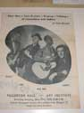
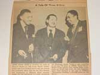

Index
|
Section II. The Crucible of Modern Free
Speech:, 1890-1948
|
Subsection B.
Cultures of Democracy
|
| Group 2: Who Speaks in the Voice of the People? |
A.
The rise and fall of populist radio: WCFL
|
Item 1: WCFL envelope
statement
re. monopolization of radio and free speech (repro) [CHS#2]
|
no picture
|
Item 2: Program, Dedication of WCFL
(front cover)
(1931) [CHS#4]
|
no picture |
B.
Government-sponsored culture in the WPA
|
C.
Chicago Renaissance Writers as a bi-racial movement
|
|
Item
1: Campesino,
defiende con las armas al gobierno que te dió la tierra (NL#180)
|
no picture
|
|
Item 2 :
Richard Wright, "Child of the
Dead and Forgotten Gods" (NL#128)
|

|
|
Item 3: Four
Men--Two Guitars--Singing--Talking--of
yesterdays and todays [flyer for folk music concert at Art Institute]
(NL#500)
|

|
|
use in reproduction: A
Tale of Three Actors [Studes Terkel, Oscar
Brown, and Fred Pinkard working together in a play protesting the
hydrogen
bomb] (NL#501)
|

|
use in reproduction: Nelson
Algren (NL#468)
|

|
use in reproduction:
Jack Conroy (NL#476)
|

|